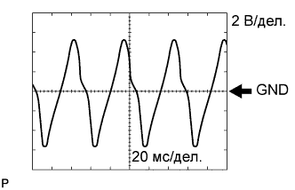

СИСТЕМА АВТОМАТИЧЕСКОЙ ТРАНСМИССИИ (для моделей с двигателем 1GR-FE) > КОНТАКТЫ ECM |
| ПРОВЕРЬТЕ ECM |
| Номера контактов (обозначения) | Цвет проводки | Описание контактов | Условие | Заданные условия |
| G55-16 (L4) - C36-12 (E1) | R - BR | Сигнал положения L4 |
| Менее 1 В |
| 11 - 14 В | |||
| C35-2 (NSW) - C36-12 (E1) | B - BR | Сигнал датчика PNP |
| Менее 1 В |
| 11-14 В | |||
| C34-35 (P) - C36-12 (E1) | L - BR | Сигнал датчика положения P рычага переключения передач |
| 11-14 В |
| Менее 1 В | |||
| C34-28 (R) - C36-12 (E1) | R - BR | Сигнал положения R датчика положения рычага переключения передач |
| 11-14 В |
| Менее 1 В | |||
| C34-29 (N) - C36-12 (E1) | G - BR | Сигнал положения N датчика положения рычага переключения передач |
| 11–14 В |
| Менее 1 В | |||
| C34-27 (D) - C36-12 (E1) | B - BR | Сигнал датчика положения D рычага переключения передач |
| 11–14 В |
| Менее 1 В | |||
| G56-24 (S) - C36-12 (E1) | V - BR | Сигнал положения S датчика положения рычага переключения передач |
| 11-14 В |
| Менее 1 В | |||
| G56-16 (SFTU) - C36-12 (E1) | GR - BR | Сигнал переключения на более высокую передачу датчика положения рычага переключения передач |
| 11-14 В |
| Менее 1 В | |||
| G56-22 (SFTD) - C36-12 (E1) | LG - BR | Сигнал переключения на более низкую передачу датчика положения рычага переключения передач |
| 11-14 В |
| Менее 1 В | |||
| C35-36 (S1) - C36-12 (E1) | L - BR | Сигнал электромагнитного клапана S1 | Зажигание включено (IG) | 11 - 14 В |
| 1-я или 2-я передача | 11 - 14 В | |||
| 3-я, 4-я или 5-я передача | Менее 1 В | |||
| C34-33 (S2) - C36-12 (E1) | L-W - BR | Сигнал электромагнитного клапана S2 | Зажигание включено (IG) | Менее 1 В |
| 2-я или 3-я передача | 11 - 14 В | |||
| 1-я, 4-я или 5-я передача | Менее 1 В | |||
| C34-31 (SR) - C36-12 (E1) | R - BR | Сигнал электромагнитного клапана SR | Зажигание включено (IG) | Менее 1 В |
| 5-я передача | 11 - 14 В | |||
| 1-я передача | Менее 1 В | |||
| C36-33 (SL1+) - C36-32 (SL1-) | V - R-B | Сигнал электромагнитного клапана SL1 | Холостой ход двигателя | Импульсы формируются (см. осциллограмму 1) |
| C35-31 (SL2+) - C36-34 (SL2-) | LG - P-L | Сигнал электромагнитного клапана SL2 | Холостой ход двигателя | Формирование импульсов (см. осциллограмму 2) |
| C35-34 (SLT+) - C35-35 (SLT-) | G-Y - L-B | Сигнал электромагнитного клапана SLT | Холостой ход двигателя | Формирование импульсов (см. осциллограмму 3) |
| C35-33 (SLU+) - C35-32 (SLU-) | P - LG | Сигнал электромагнитного клапана SLU | 4-я (с блокировкой) или 5-я (с блокировкой) передача | Формирование импульсов (см. осциллограмму 4) |
| C36-5 (THO1) - C35-8 (ETHW) | V - W-R | Сигнал датчика температуры ATF № 1 | Температура ATF № 1: 115°C (239°F) или выше | Ниже 1,5 В |
| C36-11 (THO2) - C35-8 (ETHW) | L - W-R | Сигнал датчика температуры ATF № 2 | Температура ATF № 2: 115°C (239°F) или выше | Ниже 1,5 В |
| C36-9 (SP2+) - C36-10 (SP2-) | B - W | Сигнал датчика частоты вращения SP2 | Скорость автомобиля – 20 км/час (12 миль в час) | Формирование импульсов (см. осциллограмму 5) |
| C36-3 (NT+) - C36-4 (NT-) | L - W | Сигнал датчика частоты вращения NT | Холостой ход двигателя (рычаг переключения передач в положении P или N) | Формирование импульсов (см. осциллограмму 6) |
| G55-21 (SNWI) - C36-12 (E1) | GR - BR | Сигнал переключателя выбора режима (2nd) |
| Менее 1 В |
| 11 - 14 В | |||
| G56-32 (CANH) - C36-12 (E1) | R - BR*1 LG - BR*2 | Линия передачи данных CAN | Зажигание включено (IG) | Формирование импульсов (см. осциллограмму 7) |
| G56-31 (CANL) - C36-12 (E1) | W - BR | Линия передачи данных CAN | Зажигание включено (IG) | Формирование импульсов (см. осциллограмму 8) |
 |
С помощью осциллографа проверьте форму сигнала 1.
| Номера контактов (обозначения) | Настройки прибора | Условие |
| C36-33 (SL1+) - C36-32 (SL1-) | 5 В/дел., 1 мс/дел. | Холостой ход двигателя |
|
С помощью осциллографа проверьте форму сигнала 2.
| Номера контактов (обозначения) | Настройки прибора | Условие |
| C35-31 (SL2+) - C36-34 (SL2-) | 5 В/дел., 1 мс/дел. | Холостой ход двигателя |
|
С помощью осциллографа проверьте форму сигнала 3.
| Номера контактов (обозначения) | Настройки прибора | Условие |
| C35-34 (SLT+) - C35-35 (SLT-) | 5 В/дел., 1 мс/дел. | Холостой ход двигателя |
|
С помощью осциллографа проверьте форму сигнала 4.
| Номера контактов (обозначения) | Настройки прибора | Условие |
| C35-33 (SLU+) - C35-32 (SLU-) | 5 В/дел., 1 мс/дел. | 4-я (с блокировкой) или 5-я (с блокировкой) передача |
|  |
С помощью осциллографа проверьте форму сигнала 5.
| Номера контактов (обозначения) | Настройки прибора | Условие |
| C36-9 (SP2+) - C36-10 (SP2-) | 2 В/дел., 20 мс/дел. | Скорость автомобиля – 20 км/час (12 миль в час) |
С помощью осциллографа проверьте форму сигнала 6.
| Номера контактов (обозначения) | Настройки прибора | Условие |
| C36-3 (NT+) - C36-4 (NT-) | 1 В/дел., 2 мс/дел. | Холостой ход двигателя (рычаг переключения передач в положении P или N) |
 |
С помощью осциллографа проверьте форму сигнала 7.
| Номера контактов (обозначения) | Настройки прибора | Условие |
| G56-32 (CANH) - C36-12 (E1) | 1 В/дел., 10 мкс/дел. | Зажигание включено (IG) |
С помощью осциллографа проверьте форму сигнала 8.
| Номера контактов (обозначения) | Настройки прибора | Условие |
| G56-31 (CANL) - C36-12 (E1) | 1 В/дел., 10 мкс/дел. | Зажигание включено (IG) |